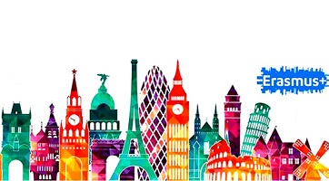

PROGRAMA ERASMUS
Erasmus+ es el programa de la UE para apoyar la educación, la formación, la juventud y el deporte en Europa.
Su presupuesto, de 14 700 millones de euros, brindará a más de 4 millones de europeos la oportunidad de estudiar, formarse y adquirir experiencia en el extranjero.
